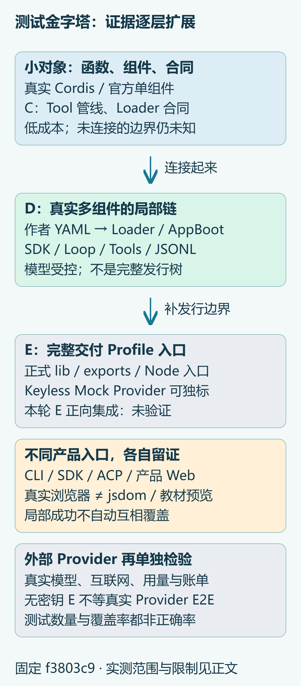
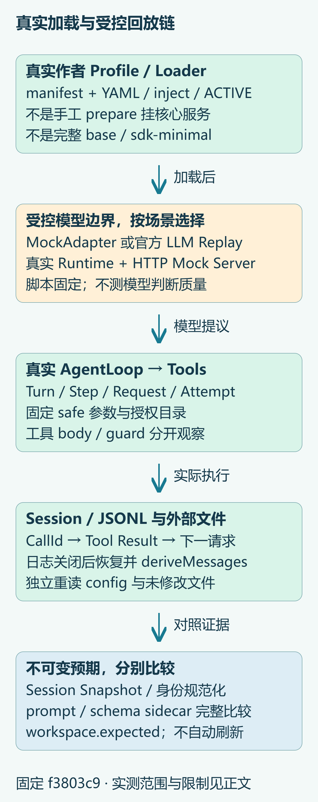
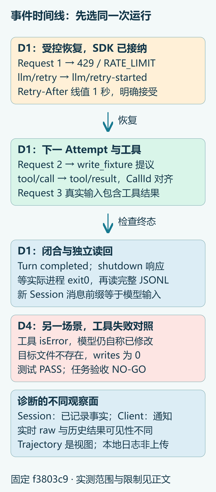
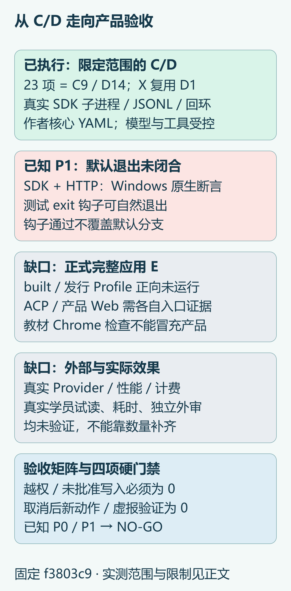

H24 作者审阅页 · 未发布。实际 LessonMarkdown 的静态渲染，折叠答案可展开；课程版本的复制交互已另经 React 挂载测试。图片在本页映射为相邻文件，不改变教材的 /course-media 路径。
大型 Agent 系统测试与综合架构分析
240～330 分钟（分三段；作者估计，环境与真实试读另计）
为什么 178 项绿色测试仍挡不住第一次连接失败？
固定仓库有一份已经解决的真实 ACP 事故复盘：单元测试全绿、行覆盖率达到100%，编辑器第一次创建/加载会话仍失败。一个默认导出把具名 inject 隐藏在 Loader 看不到的地方；另一个问题来自真实插件调用中的可选服务解析。手动把几个插件对象挂到根 Context 的测试，绕过了实际加载与调用拓扑。这里重述的是历史事故，不声称固定版本仍保留这两个已修复错误。官方事故复盘
回想你已验证的部件：Adapter能给文本、Tools能注册、Loop能走Turn、Session能保存、协议能发消息。它们并不自动证明发行Profile把这些部件正确连好，也不证明用户入口可用。覆盖率说明代码行被执行过，测试数说明注册了多少检查；两者都没有替我们回答“按交付方式运行，任务是否真的完成”。S01 · 官方测试分类 S02 · 确定性与清理策略
本课正式标题是《大型 Agent 系统测试与综合架构分析》，唯一核心目标是为一条跨模块链建立事实、测试与限制的证据矩阵。测试与必要的事件诊断是主线；H29才深入可观测性，H30才深入工程交付/CI。本课不把它们提前整课搬来，也不重排后续课程。
把 H01–H23 接成一条可以核查的链
H03的输入经Inbox、Turn/Step、模型请求和工具回到Session；H04/H08解释Profile、Bundle、Patch和服务注入；H09–H10说明Agent发布、活动、idle与Handle所有者。H13–H16把工具声明、Host执行、权限与组合分开；H17–H20把内存事实、JSONL、历史投影、重试和取消分开。H21的Activation、H22的WorkflowRun/Job/Goal/Schedule和H23的控制/订阅路径增加了更多所有者，不能把“某个对象idle”推广成“整个系统停稳”。
给每条箭头问三件事：输入是什么、谁拥有结束责任、去哪里独立观察结果？messageId只证明接受；实时通知只证明当时消费到事件；flush与writer close各有确认点；新PID读回历史不等于断电耐久。恢复事实不会重新执行旧工具，也不能复活旧AbortController、Promise和进程句柄。S07 · onlyRootAgent / runFixtureTurn S30 · Turn / Step / request boundaries S32 · Session.fromRestore S34 · JSONL handles S35 · JsonRpcLineTransport
本轮任务始终是一项小事：“把隔离目录的config.txt设为mode=safe”。少量动作足以暴露大系统边界。我们不会为了覆盖所有名词再塞入一个无关的Subagent/Workflow；第六模块组合关系在准备包索引到既有H21/H22证据。拥有旧课程权限者可选回看HTTP基础、流式取消；完成本课不依赖重新购买或打开旧课。
先分测试对象，再分证据等级
单个函数、一个真实组件、多个真实组件、完整交付入口、真实外部环境，是由小到大的对象。成本通常增大，配置/资源/网络引起失败的机会也增大。官方实际使用unit、coverage、真实API e2e、expected、bench、snapshot和Web浏览器车道；A/B/C/D/E是AI Foundry课程的证据体系，不是把官方七种车道强改成五层。S01 · 官方测试分类 S03 · source aliases / platform selection
| 课程级别 | 对象/真实部分 | Mock边界与能证明的事 | 不能证明、成本与风险 |
|---|---|---|---|
| A 教学模拟 | 自写小状态机 | 受限规则内的概念推导 | 官方组件行为未知；成本低，简化可能掩盖分支 |
| B Cordis独立 | 真实Context/Fiber/Service | 固定教学插件验证生命周期 | 不证明Harness领域能力；成本较低，注入拓扑仍可能过简 |
| C 官方组件 | 真实Loader合同、工具管线等 | 外部边界受控，验证所列合同 | 不证明未连上的其他组件；中等成本，配置组合有缺口 |
| D 局部集成 | 多组件、作者YAML核心、SDK/JSONL | 模型可Mock，验证整条选定局部链 | 不等完整发行Profile；较高成本，子进程/端口会竞态 |
| E 完整应用入口 | 交付Profile及真实入口 | 可另标Keyless Mock Provider | 无密钥E仍不证明真实模型、计费或互联网；成本高、环境风险多 |
在等级之外逐列标记：Keyless Mock Provider、真实Provider、真实浏览器、真实SDK子进程、真实JSONL、真实网络、跨进程恢复、真实环境性能。回环HTTP是实际网络通信，但不是互联网或真实Provider。浏览器打开教材是Renderer验证，不是产品Web验收。多次重跑与参数化样本增加稳定性证据，不凭次数增加独立行为场景。

真实 Loader/Profile：先问到底启动了哪一棵树
手动ctx.plugin({inject,apply})已经把测试者选好的对象交给Cordis，未必触及模块导出、Profile组合、包exports和运行时注入。真实加载先读Profile manifest及Patch，Loader再解释模块与依赖，服务可用才激活消费者。行在YAML前面不意味着先完成；config替换也不能当成深合并。S09 · loadProfileDirectory / composeEntries S10 · startup audit S11 · base composition S12 · headless composition S13 · sdk-minimal composition
本课复用官方Loader Smoke，而不自造第二套Loader。每次明确提供新建cwd：官方helper只有在自己拥有临时目录时才会自动递归清理；用户禁止批量删除，所以本课目录全部保留。另一个源码细节是inspect在期望退出码匹配后才调用；因此外层还保存stdout、stderr、退出码和trace，不能把失败证据寄托在一个可能没运行的回调。S05 · resolveExampleMode / resolveExampleLaunch S06 · runLoaderSmoke
AppBoot等树settled后会审查特定必需ID和bootstrap include，不会把所有可选FAILED/PENDING都统一抛错。本课额外核对作者核心行全部ACTIVE，再写ready。少了System Prompt、配置互斥或默认导出错误，均应非零退出、无ready、无外部文件写入。这是作者夹具的明确契约，不是篡改官方全局必需列表。S10 · startup audit
精读路线：五站够走通主线
| 顺序 | 精读文件 | 只追一个问题 |
|---|---|---|
| 1 | test-support/loader-smoke/src/index.ts | 谁启动、哪个模式、谁留证和清理？ |
| 2 | test-support/loader-smoke/src/agent-turn.ts | 为什么等收据、idle和flush？ |
| 3 | test-support/session-snapshot/src/normalize.ts | 哪些变化可规范化，哪些必须保留比较？ |
| 4 | test-support/llm-replay/src/index.ts | 已录事实如何驱动确定性响应？ |
| 5 | sdk/server/src/index.ts | shutdown响应之后还有哪些退出责任？ |
路径都相对于固定官方仓库。后文50项断言提供辅助源码入口，不要求先通读50个文件；格式压缩、Typert、OTel和性能基准放折叠区。第一段停点是完成实践A并画出自己的Profile树，预计60～80分钟。
实践准备：一套固定环境，四次逐步运行
在AI Foundry根目录打开终端，先确认当前分支与已有改动。以下runner只创建明确归属的新临时目录，不启动真实用户Profile。作者环境为Windows、Node24.16.0；官方最低Node版本要求以固定package.json为准。源码缓存必须是f3803c96974ad4a94195fb97e5c637e9c2a3afe3。准备页列8个依赖锚点、锁定清单及可覆盖变量；缺依赖时先停在预检，不能改成最新包或跳过核验。
node docs/deepseek-harness-v2/h24/scripts/run-labs.mjs A
node docs/deepseek-harness-v2/h24/scripts/run-labs.mjs B
node docs/deepseek-harness-v2/h24/scripts/run-labs.mjs C
node docs/deepseek-harness-v2/h24/scripts/run-labs.mjs D
node docs/deepseek-harness-v2/h24/scripts/run-labs.mjs P
node docs/deepseek-harness-v2/h24/scripts/run-labs.mjs X每组末尾预期PASS A等及保留的scratch路径；所有具体子项、退出码、协议帧和实际文件在evidence/run-*.json及对应trace。无组名运行23项固定测试，预期pass23、fail0、skipped0；原M1–M6的24项A单独记录。预检可先花时间核11865个源/config/doc文件，尚未出现子进程不意味着挂死。
共同恢复规则：失败先保存原始run和scratch，按错误层判断缺依赖、加载失败、事件不匹配、外部文件不符或退出失败；修复自己的新夹具后开新world重跑。不要改用户项目、不要读真实凭据、不要提高timeout掩盖未知后台工作、不要自动刷新Snapshot。端口/子进程释放与磁盘夹具保留是两件事。
想深入再看：公共准备完整程序
import assert from 'node:assert/strict';
import {mkdtemp,writeFile,readFile,readdir,mkdir} from 'node:fs/promises';
import {resolve,dirname} from 'node:path';
import {pathToFileURL} from 'node:url';
import {createHash} from 'node:crypto';
import {runLoaderSmoke,resolveExampleLaunch,resolveExampleMode} from '@deepseek-ai/dsh-loader-smoke';
export {assert,writeFile,readFile,readdir,mkdir,resolve,pathToFileURL,runLoaderSmoke,resolveExampleLaunch,resolveExampleMode};
export const here=process.env.H24_RUN_ROOT!,source=process.env.HARNESS_SOURCE_CACHE!;
export const sha=(b:Uint8Array|string)=>createHash('sha256').update(b).digest('hex');
export const fixed=(p:string)=>pathToFileURL(resolve(source,p)).href;
export const record=async(name:string,value:unknown)=>writeFile(resolve(here,`trace-${name}.json`),JSON.stringify(value,null,2)+'\n');
export async function bounded<T>(p:PromiseLike<T>,label='operation',ms=12000):Promise<T>{let timer:any;try{return await Promise.race([p,new Promise<never>((_,reject)=>timer=setTimeout(()=>reject(Error(label+' timeout')),ms))]);}finally{clearTimeout(timer);}}
export async function until(check:()=>boolean,label:string){const end=Date.now()+10000;while(Date.now()<end){if(check())return;await new Promise<void>(r=>setImmediate(r));}throw Error(label+' not reached');}
export function gate(){let release!:()=>void;const promise=new Promise<void>(r=>release=r);return {promise,release};}
export async function world(options:{fault?:string;sdk?:boolean;resume?:string;root?:string;replay?:string;endpoint?:string}={}){
const root=options.root??await mkdtemp(resolve(here,'world-')),workspace=resolve(root,'workspace');await mkdir(workspace,{recursive:true});
await writeFile(resolve(workspace,'unchanged.txt'),'KEEP\n',{flag:'wx'}).catch((e:any)=>{if(e.code!=='EEXIST')throw e;});
const profile=resolve(root,'home/profiles/h24-fixture');await mkdir(profile,{recursive:true});
await writeFile(resolve(profile,'package.json'),JSON.stringify({name:'h24-author-fixture',private:true,dsh:{profile:{bundles:[]}}}));await writeFile(resolve(profile,'cordis.patch.yml'),'[]\n');
const row=(id:string,path:string,config:unknown={})=>({id,name:fixed(path),config});
const entries=[row('llm','packages/llm/llm/src/index.ts'),row('sessions','packages/core/session/src/index.ts'),row('projection','packages/session/session-projection/src/index.ts'),row('system','packages/core/system-prompt/src/index.ts',{includeHarnessIdentity:false,personaPrefix:'Use fictional fixture only.'}),row('tools','packages/core/tools/src/index.ts'),row('executor','packages/core/tool-executor-native/src/index.ts'),row('agents','packages/core/agent/src/index.ts'),row('fs','packages/fs/fs-local/src/index.ts'),row('directory','packages/session/working-directory/src/index.ts'),row('jsonl','packages/session/session-persistence-jsonl/src/index.ts',{root:resolve(root,'sessions'),compression:'none'}),{id:'fixture',name:pathToFileURL(resolve(here,'fixture-plugin.ts')).href,config:{root,workspace,fault:options.fault??'none',replay:options.replay,endpoint:options.endpoint}},row('loop','packages/core/agent-loop/src/index.ts',{agents:options.sdk?[]:[{id:'root',sessionId:'h24-root',provider:'fixture',model:'fixture',cwd:workspace,...options.resume?{sessionId:undefined,resumeSessionId:options.resume}:{}}]})];
if(options.endpoint)entries.splice(entries.findIndex(x=>x.id==='fixture'),0,row('retry','packages/llm/llm-retry/src/index.ts'));
if(options.fault==='missing')entries.splice(entries.findIndex(x=>x.id==='system'),1);
if(options.fault==='bad-config')(entries.find(x=>x.id==='loop')!.config as any).agents=[{id:'bad',sessionId:'same',resumeSessionId:'same'}];
if(options.fault==='bad-export')entries.push({id:'bad-export',name:pathToFileURL(resolve(here,'bad-export.ts')).href,config:{}});
if(options.sdk)entries.push({id:'sdk',name:pathToFileURL(resolve(here,'sdk-plugin.ts')).href,config:{}});
const config=resolve(profile,'cordis.yml');await writeFile(config,JSON.stringify(entries,null,2)+'\n');
return {root,workspace,profile,config,env:{H24_PROFILE:profile,H24_WORLD:root,DSH_HOME:resolve(root,'home')}};
}
export async function smoke(w:Awaited<ReturnType<typeof world>>,expectedExitCode=0){
const result=await runLoaderSmoke({label:'H24 real author Profile',cwd:w.root,binScript:process.env.H24_APP_ENTRY!,configPath:w.config,tsconfigPath:resolve(here,'tsconfig.json'),mode:'src',sourceImport:'tsx/esm',env:w.env,expectedExitCode,processTimeoutMs:15000});await record('last-smoke',{world:w,...result});return result;
}
export async function rawLog(root:string){const files=await readdir(resolve(root,'sessions'),{recursive:true});const p=files.filter(f=>f.endsWith('.jsonl'));assert.equal(p.length,1);return readFile(resolve(root,'sessions',p[0]),'utf8');}想深入再看：隔离依赖完整程序
// 依赖锚点均由作者 runner 按固定上游 lock 完整核验。
import fs from 'node:fs';
import {resolve} from 'node:path';
import {registerHooks, createRequire, syncBuiltinESMExports} from 'node:module';
import {pathToFileURL} from 'node:url';
const dep=createRequire(pathToFileURL(process.env.H24_DEPS_ANCHOR));
const zod=createRequire(pathToFileURL(process.env.H24_ZOD_ANCHOR));
const native=createRequire(pathToFileURL(process.env.H24_NATIVE_ANCHOR));
const limit=createRequire(pathToFileURL(process.env.H24_LIMIT_ANCHOR));
const ptc=createRequire(pathToFileURL(process.env.H24_PTC_ANCHOR));
const wire=createRequire(pathToFileURL(process.env.H24_WIRE_ANCHOR));
const entries=new Map(['commander','js-yaml','@eslint-community/regexpp','ajv','node-addon-require-builtin','resolve.exports','semver']
.map(name=>[name,pathToFileURL(dep.resolve(name)).href]));
entries.set('eventsource-parser/stream',pathToFileURL(wire.resolve('eventsource-parser/stream')).href);
entries.set('mime-types',pathToFileURL(wire.resolve('mime-types')).href);
entries.set('ws',pathToFileURL(resolve(process.env.H24_WIRE_ANCHOR,'../wrapper.mjs')).href);
entries.set('zod',pathToFileURL(zod.resolve('zod')).href);
entries.set('koffi',pathToFileURL(native.resolve('koffi')).href);
entries.set('yaml',pathToFileURL(native.resolve('yaml')).href);
entries.set('chokidar',pathToFileURL(native.resolve('chokidar')).href);
entries.set('p-limit',pathToFileURL(limit.resolve('p-limit')).href);
entries.set('@js-temporal/polyfill',pathToFileURL(limit.resolve('@js-temporal/polyfill')).href);
for(const name of ['acorn','acorn-walk','birpc'])entries.set(name,pathToFileURL(ptc.resolve(name)).href);
for(const [name,file] of [['@deepseek-ai/dsh-api-gateway/client','packages/api/gateway/src/client/index.ts'],['@deepseek-ai/dsh-client-connection/client','packages/client/connection/src/client/index.ts'],['@deepseek-ai/dsh-client-connection/src/client/rpc.ts','packages/client/connection/src/client/rpc.ts']])entries.set(name,pathToFileURL(resolve(process.env.HARNESS_SOURCE_CACHE,file)).href);
const test=createRequire(pathToFileURL(process.env.H24_TEST_ANCHOR));
for(const name of ['execa','tsx','tsx/esm','tsx/esm/api','fast-check'])entries.set(name,pathToFileURL(test.resolve(name)).href);
const http=createRequire(pathToFileURL(process.env.H24_HTTP_ANCHOR));entries.set('undici',pathToFileURL(http.resolve('undici')).href);
registerHooks({resolve(specifier,context,next){return next(entries.get(specifier)??specifier,context);}});
// 用户禁止批量/递归删除；包括上游异常清理路径也不准执行递归 rm。
const rm=fs.promises.rm;
const rmSync=fs.rmSync;
fs.rmSync=(path,options)=>{if(options?.recursive)throw Error('H24 safety guard: recursive removal forbidden');return rmSync(path,options);};
fs.promises.rm=async(path,options)=>{
if(options?.recursive)throw Error('H24 safety guard: recursive removal forbidden');
return rm(path,options);
};
syncBuiltinESMExports();想深入再看：安全工具与模型完整程序
// Author-owned safe boundary. Core plugins themselves are loaded by the real Loader YAML.
import type {Context} from '@deepseek-ai/cordis';
import {defineTool} from '@deepseek-ai/dsh-tools';
import {writeFile,readFile} from 'node:fs/promises';
import {resolve} from 'node:path';
import {pathToFileURL} from 'node:url';
export const name='h24-safe-fixture',inject=['llm','tools','sessions','workingDirectory'];
export async function apply(ctx:Context,config:any){
const {MockAdapter,textResponse,toolCallResponse}=await import(pathToFileURL(resolve(process.env.HARNESS_SOURCE_CACHE!,'packages/core/agent-loop/tests/mock-adapter.ts')).href);
const calls:any[]=[],events:any[]=[],requests:any[]=[];let writes=0;let replay:any;
const adapter=new MockAdapter(config.fault==='cancel'?['hang']:[toolCallResponse('fixture-call','write_fixture',{text:'mode=safe\n'}),textResponse('I changed config.txt to mode=safe.')]);
if(config.replay){const {installLlmReplay}=await import('@deepseek-ai/dsh-llm-replay');replay=installLlmReplay(ctx,{file:config.replay,providers:[{id:'fixture',name:'Fixture',models:[{id:'fixture'}]}]});}
else if(config.endpoint){
const undici=await import('undici');const prior=undici.getGlobalDispatcher(),dispatcher=new undici.Agent({connections:1});undici.setGlobalDispatcher(dispatcher);ctx.effect(()=>async()=>{await dispatcher.close();undici.setGlobalDispatcher(prior);});
const {DeepSeekAdapter}=await import(pathToFileURL(resolve(process.env.HARNESS_SOURCE_CACHE!,'packages/llm/llm-deepseek/src/adapter.ts')).href);
const {resolveAdapterOptions}=await import('@deepseek-ai/dsh-llm-deepseek');
const remote=new DeepSeekAdapter({options:()=>resolveAdapterOptions({baseURL:config.endpoint,models:[{id:'fixture'}],thinking:'disabled',reasoningEffort:'off',maxTokens:128,streamIdleTimeoutMs:1000,retryPolicy:{mode:'normal',maxRetries:1,backoff:{initialDelayMs:1,maxDelayMs:config.fault==='retry-ceiling'?1:1000,jitterRatio:0}}}),resolveAuth:async()=>({headers:{'x-api-key':'h24-local-only','connection':'close'}}),resolveUserId:()=> 'h24-fictional-user',prepareExtensions:async()=>({fields:{},accept:async()=>{}})});
ctx.llm.registerAdapter(['fixture'],remote);
}else ctx.llm.registerAdapter(['fixture'],adapter);
ctx.on('llm/stream',async function*(options:any,next:any){requests.push(structuredClone({...options,signal:undefined}));if(config.fault==='cancel')await writeFile(resolve(config.root,'model-entered'),'ready');yield*next();});
if(config.fault==='deny')ctx.tools.guard(()=> 'H24 controlled deny');
ctx.tools.register(defineTool({name:'write_fixture',description:'Write one new fixture config file.',parameters:{text:{type:'string',enum:['mode=safe\n'],required:true}},output:{schema:{type:'object',properties:{written:{type:'boolean',required:true}},additionalProperties:false},render:(_args:any,value:any)=>[{type:'text',text:JSON.stringify(value)}]},execute:async(args:any)=>{calls.push(args);if(config.fault==='tool-error')throw Error('H24 controlled tool failure');await writeFile(resolve(config.workspace,'config.txt'),args.text);writes++;return {written:true};}}));
ctx.on('session/event',(session,event)=>events.push({sessionId:session.id,event}));
ctx.effect(()=>async()=>{let replayConsumption:any;try{replay?.assertConsumed();replayConsumption=replay?'complete':undefined;}catch(e){replayConsumption=String(e);}await writeFile(resolve(config.root,'runtime-trace.json'),JSON.stringify({pid:process.pid,writes,calls,requests,events,replayConsumption},null,2)+'\n');});
}想深入再看：Profile 进程入口完整程序
import {boot,loadProfileDirectory} from '@deepseek-ai/dsh-app-boot';
import {runFixtureTurn} from '@deepseek-ai/dsh-loader-smoke';
import {resolve} from 'node:path';
import {writeFile} from 'node:fs/promises';
if(process.env.H24_EXIT_BEFORE_BOOT==='1'){process.stderr.write('H24 deliberate abnormal fixture exit\n');process.exit(7);}
const profileDir=process.env.H24_PROFILE!,root=process.env.H24_WORLD!,sdk=process.argv.includes('--profile');
let ctx:any;
try{
const profile=loadProfileDirectory('h24',profileDir,resolve(profileDir,'package.json'));
ctx=await boot('h24',resolve(profileDir,'cordis.yml'),profile.patches);
for(const entry of ctx.loader.entries()){if(entry.options.id!=='include'&&entry.fiber?.state!==2)throw Error('required H24 fixture entry did not activate: '+entry.options.id);}
await writeFile(resolve(root,'ready.json'),JSON.stringify({pid:process.pid,sdk,entries:[...ctx.loader.entries()].map((e:any)=>({id:e.options.id,name:e.options.name,state:e.fiber?.state})),profile:profileDir}));
if(sdk){process.stdin.on('end',()=>{void ctx.fiber.dispose();});}
else{const result=await runFixtureTurn(ctx,{task:'Set fixture config to safe mode.'});process.stdout.write(JSON.stringify(result)+'\n');await ctx.fiber.dispose();ctx=undefined;}
}catch(e:any){process.stderr.write(String(e.stack??e)+'\n');process.exitCode=1;}
finally{if(!sdk||process.exitCode)await ctx?.fiber.dispose();}想深入再看：SDK 退出所有者完整程序
// Explicit official runtime-only test hook. It does not test production process.exit wiring.
import type {Context} from '@deepseek-ai/cordis';
import * as SDK from '@deepseek-ai/dsh-sdk-jsonrpc-server';
export const name='h24-sdk-process-owner',inject=SDK.inject,Config=SDK.Config;
export function apply(ctx:Context,config:SDK.JsonRpcConfig){
SDK.apply(ctx,{...config,exit(code){process.exitCode=code;process.stdin.pause();}});
}想深入再看：错误导出反例完整程序
// Deliberate regression fixture: default hides the named inject requirement.
export const inject=['serviceThatDoesNotExist'];
export function apply(){throw Error('named apply must never run with missing inject');}
export default function(){throw Error('wrong default export regression');}实践 A：从真实 YAML 到一轮可核查执行
操作顺序：①预测；②运行A；③从raw run找world而非去个人Home；④核loop ACTIVE=2和实际文件mode=safe\n，未修改文件KEEP\n；⑤核三个失败子进程exit1且无ready/写文件；⑥对照A3导出守卫能拒绝坏模块。A4严格拒绝非法模式，普通Node启动真实预期lib路径时得到MODULE_NOT_FOUND；正向lib运行仍NOT_RUN。S05 · resolveExampleMode / resolveExampleLaunch S06 · runLoaderSmoke S07 · onlyRootAgent / runFixtureTurn S16 · author schema DSL
想深入再看：实践 A 完整程序
import {assert,world,smoke,rawLog,readFile,resolve,record,resolveExampleLaunch,resolveExampleMode} from './support.ts';
export async function profileTurn(){const w=await world(),out=await smoke(w);const log=await rawLog(w.root),ready=JSON.parse(await readFile(resolve(w.root,'ready.json'),'utf8'));assert.equal(await readFile(resolve(w.workspace,'config.txt'),'utf8'),'mode=safe\n');assert.equal(await readFile(resolve(w.workspace,'unchanged.txt'),'utf8'),'KEEP\n');assert.ok(ready.entries.some((e:any)=>e.id==='loop'&&e.state===2));assert.ok(log.includes('tool/result'));const result={world:w,...out,ready,log,runtime:JSON.parse(await readFile(resolve(w.root,'runtime-trace.json'),'utf8'))};await record('A1',result);return result;}
export const cases:[string,()=>Promise<void>][]=[
['D A1 Loader YAML composes real core, drives tool and independently reads file',async()=>{await profileTurn();}],
...['missing','bad-config','bad-export'].map(fault=>['C A2 startup refuses '+fault,async()=>{const w=await world({fault}),out=await smoke(w,1);assert.match(out.stderr,/did not activate|mutually exclusive|wrong default/);await assert.rejects(readFile(resolve(w.root,'ready.json')));await assert.rejects(readFile(resolve(w.workspace,'config.txt')));await record('A2-'+fault,{world:w,...out,expected:'no ready marker or external write'});}] as [string,()=>Promise<void>]),
['C A3 actual Loader export unwrap reveals hidden inject regression',async()=>{const {Context}=await import('@deepseek-ai/cordis'),{default:Loader}=await import('@deepseek-ai/cordis-plugin-loader');const ctx=new Context();try{await ctx.plugin(Loader);const good=await import('./fixture-plugin.ts'),bad=await import('./bad-export.ts');assert.equal('default' in good,false);assert.deepEqual(ctx.loader.unwrapExports(good).inject,good.inject);assert.equal('default' in bad,true);assert.equal(ctx.loader.unwrapExports(bad).inject,undefined);assert.throws(()=>assert.equal('default' in bad,false));await record('A3',{goodInject:good.inject,badNamedInject:bad.inject,badDefaultHidesInject:true,guardRejectsRegression:true});}finally{await ctx.fiber.dispose();}}],
['C A4 source and built launch contracts refuse invalid mode and missing lib',async()=>{assert.throws(()=>resolveExampleMode('green-at-any-cost'));const {source,fixed}=await import('./support.ts');const launch=resolveExampleLaunch({srcBin:resolve(source,'apps/cli/src/bin.ts'),mode:'lib'});assert.equal(launch.args.some(a=>a.includes('tsx')),false);assert.ok(launch.args[0].replaceAll('\\','/').endsWith('lib/bin.js'));await assert.rejects(readFile(launch.args[0]),{code:'ENOENT'});const w=await world();const out=await import('@deepseek-ai/dsh-loader-smoke').then(m=>m.runLoaderSmoke({label:'explicit unavailable official built CLI',cwd:w.root,binScript:resolve(source,'apps/cli/src/bin.ts'),configPath:w.config,tsconfigPath:resolve(process.env.H24_RUN_ROOT!,'tsconfig.json'),mode:'lib',expectedExitCode:1,processTimeoutMs:5000}));assert.match(out.stderr,/MODULE_NOT_FOUND/);await record('A4',{launch,...out,builtPositive:'NOT_RUN: fixed source cache has no official lib artifacts; no source fallback or alternate bundle presented as built product'});}],
];想深入再看：实践 A 详细参考答案
成功链经过真实loadProfileDirectory、AppBoot和Cordis Loader，核心服务不是prepare里手动拼上。官方MockAdapter驱动两Step：先提议固定工具，再读工具结果并给最终文本；独立文件读取验证外部效果。runFixtureTurn先装观察，再提交输入并等待对应活动结算与Session flush。
缺服务的条目可能PENDING；仅等settled不足，作者全部必需行守卫拒绝。bad-config在Agent配置层拒绝同时指定sessionId/resume；bad-export保留的具名inject被默认裸函数隐藏，显式守卫能抓回归。三个错误都没有写入Fixture。A3是真实unwrap合同，不能拿它代替实际Profile正向链。
源码模式使用TS路径映射与加载器；lib模式按已生成文件与package exports解析。本机固定源树缺正式lib产物，A4验证的是缺失时会响亮失败；不等于发行CLI成功。失败时先看stderr和ready，再检查源码/构建模式，不把src回退写成lib绿灯。
Rubric共10分：真实加载链2、注入/ACTIVE门禁2、三个失败归层2、文件和事件关联2、构建正向未验证2。若称“exit0就任务成功”或“缺lib反例证明构建通过”，本实践证据判断不得分。
想深入再看：源码、构建产物与正式运行命令
固定根package.json的build会走真实构建编排；build:lib分别编译host/client，test:web先build再test:web:built，test:snapshot调用对应Vitest配置。构建后普通Node入口才可能发现exports、共享单例或残旧lib造成的差异。仅打包作者夹具成一个JS文件也不能替代发行构建。S03 · source aliases / platform selection S04 · build / test scripts
以下只是固定官方仓库命令对照，不在AI Foundry主站执行：pnpm run build、pnpm run build:lib、pnpm run test:snapshot、pnpm run test:web:built。先在独立固定仓库准备完整依赖、原生产物和授权的清理策略，再运行所选官方车道。本轮没有执行这些正向产品门禁；上游部分清理会递归删除，不符合当前用户约束，不能原样照跑。CLI的src/lib子进程统一复用官方resolveExampleLaunch，不手写tsx当构建入口。
Snapshot 与 Replay：同样输入，比较哪些事实？
Snapshot是一组审阅过的预期事实；Replay让已录响应驱动一次新的真实运行。当前机制按每个parent/child角色选最高generation，文件名与header格式版本必须匹配；规范化会消除不稳定时间、路径与身份值，仍需保留身份间关系、事件顺序、工具参数及结果。历史generation不能为了让新代码变绿而覆盖。S19 · parseSessionLog / comparison encoding S20 · deriveReplayScript S21 · installLlmReplay S24 · writesCurrentSessionFixtures / parseSnapshotManifest S25 · normalizeSessionSnapshot(s) S26 · redactSessionSnapshotIds
MockAdapter、真实LlmRuntime和真实Provider分别回答三类问题：脚本规定输出；Runtime执行实际路由、协议与消费；真实Provider才提供外部模型能力与真实用量/计费事实。用Mock不削弱下游真实工具与Session的价值，但也不扩大到模型判断质量。两个相同输入的新world应得到同样规范化结果，这才是本课的可重复测试。S18 · MockAdapter / hang / toolCallResponse S21 · installLlmReplay S22 · MockLlmServerOptions

实践 B：不可变基线、请求头与完整 Workspace
①打开fixtures/session.v4.jsonl，共header加17事件；②观察typed身份token和工具关联；③运行B1真实llm-replay，确认assertConsumed与两个Step；④完整比较两个workspace文件及集合；⑤B2验证两份相同输入的规范化输出相等；⑥B3只在内存里制造错误期望，断言红灯被检测，原文件字节未变，再比较正确预期通过。没有修改已存在基线的步骤。
本课直接复用Snapshot的identity、normalize、manifest、workspace真实子模块，未运行官方完整profile-adapter Snapshot Suite。根套件与pure helper不是同一覆盖范围。请求头的大块字段在主Snapshot压缩后，用独立固定sidecar完整比较，不能把scrub解释成忽略prompt/Schema。S24 · writesCurrentSessionFixtures / parseSnapshotManifest S25 · normalizeSessionSnapshot(s) S27 · captureWorkspaceSnapshot S28 · scrubSystemPrompts / scrubToolSchemas
想深入再看：实践 B 完整程序
import {assert,fixed,world,smoke,rawLog,readFile,writeFile,resolve,record,here,source,sha} from './support.ts';
import {profileTurn} from './A.ts';
const normalize=async(log:string,cwd:string)=>{const m=await import(fixed('packages/test-support/session-snapshot/src/normalize.ts'));const {redactSessionSnapshotIds}=await import(fixed('packages/test-support/session-snapshot/src/identity.ts'));return m.normalizeSessionSnapshot(redactSessionSnapshotIds([log])[0],{sessionIds:[],cwd,cwdAliases:[JSON.stringify(cwd).slice(1,-1)]},{identityMode:'preserve'});};
export async function seedCandidate(){const a=await profileTurn(),candidate=await normalize(a.log,a.world.workspace);assert.ok(!candidate.includes(a.world.workspace.split(/[\\/]/).slice(-2,-1)[0]));await record('seed-candidate',{candidate,raw:a.log,workspace:a.world.workspace,meaning:'new author baseline candidate only; must inspect before copying into fixtures; tests never write goldens'});}
export async function snapshotTurn(){
const w=await world({replay:resolve(here,'fixtures/session.v4.jsonl')}),out=await smoke(w),log=await rawLog(w.root),actual=await normalize(log,w.workspace),expected=await readFile(resolve(here,'fixtures/session.v4.jsonl'),'utf8');assert.equal(actual,expected);const rows=log.trim().split('\n').map((l:string)=>JSON.parse(l));assert.deepEqual(rows.find((e:any)=>e.type==='request/header').data.header.tools,JSON.parse(await readFile(resolve(here,'fixtures/tool-schemas.expected.json'),'utf8')));assert.deepEqual(rows.find((e:any)=>e.type==='system/message').data.message.content,JSON.parse(await readFile(resolve(here,'fixtures/system-prompt.expected.json'),'utf8')));
const {captureWorkspaceSnapshot,captureExpectedWorkspaceSnapshot}=await import(fixed('packages/test-support/session-snapshot/src/workspace.ts'));
const actualWorld=await captureWorkspaceSnapshot(w.workspace),expectedWorld=await captureExpectedWorkspaceSnapshot(resolve(here,'fixtures/workspace.expected'));assert.deepEqual(actualWorld,expectedWorld);
const runtime=JSON.parse(await readFile(resolve(w.root,'runtime-trace.json'),'utf8'));assert.equal(runtime.replayConsumption,'complete');assert.ok(runtime.requests[1].messages.some((m:any)=>m.role==='tool'));const result={world:w,...out,log,actual,expectedSha256:sha(expected),actualWorld,runtime};await record('B1',result);return result;
}
export const cases:[string,()=>Promise<void>][]=[
['D B1 real replay, Snapshot normalizer, tool history and complete workspace compare',async()=>{await snapshotTurn();}],
['D B2 independent identical input gives identical normalized output without rewriting baseline',async()=>{const before=await readFile(resolve(here,'fixtures/session.v4.jsonl')),a=await profileTurn(),b=await profileTurn();assert.equal(await normalize(a.log,a.world.workspace),await normalize(b.log,b.world.workspace));assert.equal(await normalize(a.log,a.world.workspace),before.toString());assert.deepEqual(await readFile(resolve(here,'fixtures/session.v4.jsonl')),before);await record('B2',{first:a.world,second:b.world,baselineUnchanged:true,normalized:await normalize(a.log,a.world.workspace)});}],
['D B3 a false expected result turns red while correct immutable fixture stays green',async()=>{const a=await snapshotTurn(),wrong=a.actual.replace('mode=safe','mode=unsafe');assert.notEqual(wrong,a.actual);assert.throws(()=>assert.equal(a.actual,wrong));assert.equal(await readFile(resolve(here,'fixtures/session.v4.jsonl'),'utf8'),a.actual);await record('B3',{mismatchDetected:true,baselineUnchanged:true,correctAgain:true});}],
['C B4 official manifest rejects unknown fields and replay mode cannot write current fixtures',async()=>{const {parseSnapshotManifest,writesCurrentSessionFixtures}=await import(fixed('packages/test-support/session-snapshot/src/manifest.ts'));const manifest=parseSnapshotManifest('version: 1\nprofile: headless\nrecording: authored\n');assert.equal(writesCurrentSessionFixtures(manifest,'replay'),false);assert.equal(writesCurrentSessionFixtures(manifest,'record'),true);assert.throws(()=>parseSnapshotManifest('version: 1\nprofile: headless\ntrustMe: true\n'));await record('B4',{manifest,replayWrites:false,recordWrites:true,scope:'manifest contract only; author Profile is not an official profile-adapter suite'});}],
];想深入再看：实践 B 详细参考答案
第一份新作者基线来自受控模型的新候选，作者检查18行、两个Step、调用/结果、路径脱敏和sidecar后写入。Windows首次写文件产生CRLF，而官方normalizer输出LF，初次比较因此红灯；这不是行为变化。原始字节、初审清单和明确EOL修订都保留；新增.gitattributes只固定本课Fixture的LF。后续测试始终只读这些基线，未运行Record/Refresh。
规范化先做typed身份映射，再用identityMode preserve避免旧式全UUID映射把不同身份混在一起。Windows嵌入JSON的cwd另提供escaped alias。plural比较编码可处理格式元数据，不直接保存为可回放原格式文件；本课v4文件保留version。Replay消耗记录证明预期响应被走完，下一模型请求真实包含tool角色；独立workspace捕获证明文件事实，不依赖最终Assistant自述。
B4只是manifest parser/write-mode合同：replay不写，record会写，未知字段拒绝。官方Record/Refresh具有修改基线能力，应评审每个diff与代际，失败时不自动全量重录。误区是“新的actual总比旧expected正确”，这会抹掉回归。
Rubric10分：版本/typed身份2、tool/result及请求2、workspace与未改字节2、两次确定性2、拒绝自动刷新及区分子模块/Suite2。自行覆盖基线后报绿灯，验收NO-GO。
第二段停点： 交一张“输入→请求→工具→外部文件→持久事实”证据表，指出每列独立观察者。预计70～100分钟；不要在没有搞懂基线前继续加浏览器或遥测。
客户端不是同一条验证路径
| 入口 | 至少检查 | 仍需独立的证据 |
|---|---|---|
| Headless/CLI | 正式启动参数、退出码、输出与持久会话 | exit0可能只表示driver正常收尾；任务终态另查 |
| SDK stdio | 请求响应id、通知、Prompt接纳、idle、Resume和进程退出 | 真实SDK不证明产品Web可用 |
| ACP | ACP请求/语义事件与编辑器行为 | 不能从SDK方法名推导ACP协议全通过 |
| Web | 浏览器真实渲染、Connection/Host、历史与状态同步 | jsdom不证明网络，RemoteMock不证明真实Host权限 |
官方有Client Test Runtime、RemoteMock和真实浏览器Snapshot工具。TestRemote是其中一个受控事件double；本课只运行该子模块的订阅/取消订阅、禁止真实mount和shadow名守卫。它不启动完整Slot Runtime、不挂jsdom、不验证真实Cookie/WebSocket/Host授权。S38 · TestRemote S39 · SlotTestRuntime S40 · RemoteMock exports
固定Web车道以Playwright启动Chromium，部分场景还用WebKit，配套built Client/Host、Fixture、浏览器状态、交互及截图/ARIA证据。实际产品构建、原生产物、全套依赖和合法清理尚未准备，本轮产品Web标NOT_RUN。后续有条件时复用官方scaffold与replay，记录浏览器版本/操作/实际UI/重连错误/会话关联，而不是让学员无限制手工点击。教材三宽Chrome测试另列Renderer证据。S41 · browser scaffold S42 · browser CI owners
实践 C：SDK 帧、恢复与连接失败
①C1从真实SDK发输入，等运行结果；②关闭并核actual child exit0，不止检查shutdown响应；③独立读文件与JSONL；④C2用新PID恢复相同Session，先证明无session/prompt，再发第二条输入并核历史前缀保留；⑤C3启动前故意exit7，start拒绝，close后实际进程已退出。所有环境白名单，DSH_HOME指向新world。S35 · JsonRpcLineTransport S36 · apply / runtime exit hook S37 · HarnessClient process owner
想深入再看：实践 C 完整程序
import {DeepSeekHarness} from '@deepseek-ai/dsh-sdk-client';
import {assert,world,bounded,readFile,rawLog,record,resolve,here} from './support.ts';
export function options(w:Awaited<ReturnType<typeof world>>,extra:Record<string,string>={}){
const keys=['SystemRoot','WINDIR','TEMP','TMP','PATH','PATHEXT','HARNESS_SOURCE_CACHE','H24_DEPS_ANCHOR','H24_ZOD_ANCHOR','H24_NATIVE_ANCHOR','H24_LIMIT_ANCHOR','H24_PTC_ANCHOR','H24_WIRE_ANCHOR','H24_TEST_ANCHOR','H24_HTTP_ANCHOR','H24_RUN_ROOT','TSX_TSCONFIG_PATH'];
const env=Object.fromEntries(keys.filter(k=>process.env[k]!==undefined).map(k=>[k,process.env[k]]));
// Thin author source entry preloads the exact source loader, then bootstraps real YAML.
return {dshBin:resolve(here,'sdk-entry.mjs'),profile:'h24-fixture',dshHome:w.env.DSH_HOME,cwd:w.workspace,processCwd:w.root,provider:'fixture',model:'fixture',env:{...env,...w.env,...extra},requestTimeoutMs:10000,shutdownTimeoutMs:3000};
}
export function observe(client:any){client.start();const child=client.child;assert.ok(child?.pid);const stdin:string[]=[];let stdout='',stderr='';const write=child.stdin.write.bind(child.stdin);child.stdin.write=(b:any,...rest:any[])=>{stdin.push(b.toString());return write(b,...rest);};child.stdout.on('data',(b:any)=>stdout+=b.toString());child.stderr.on('data',(b:any)=>stderr+=b.toString());return {child,trace:()=>({pid:child.pid,exit:child.exitCode,signal:child.signalCode,stdin,stdout,stderr,frames:stdout.slice(0,stdout.lastIndexOf('\n')+1).split(/\r?\n/).filter(Boolean).map(s=>JSON.parse(s))})};}
export async function sdkTurn(extra:any={}){const w=await world({...extra,sdk:true}),h=new DeepSeekHarness(options(w)),wire=observe(h.client);try{const result=await bounded(h.run('Set fixture config to safe mode.',{sessionId:'sdk-report'}));await h.close();assert.equal(wire.child.exitCode,0);assert.equal(await readFile(resolve(w.workspace,'config.txt'),'utf8'),'mode=safe\n');const log=await rawLog(w.root);assert.ok(wire.trace().frames.some((f:any)=>f.method==='session.event'));const out={world:w,result,log,wire:wire.trace(),runtime:JSON.parse(await readFile(resolve(w.root,'runtime-trace.json'),'utf8'))};await record('C1',out);return out;}catch(e){await record('C1-failure',{error:String(e),world:w,wire:wire.trace()});throw e;}finally{await h.close();}}
export const cases:[string,()=>Promise<void>][]=[
['D C1 real SDK subprocess drives Loader-composed Session and external tool result',async()=>{await sdkTurn();}],
['D C2 new SDK PID resumes persistent history without automatic prompt',async()=>{const first=await sdkTurn(),w=first.world,h=new DeepSeekHarness(options(w)),wire=observe(h.client);try{const session=await h.resumeSession('sdk-report');assert.equal(wire.trace().stdin.join('').includes('session/prompt'),false);const result=await session.run('Second bounded verification.');await h.close();assert.notEqual(wire.child.pid,first.wire.pid);assert.equal(wire.child.exitCode,0);const log=await rawLog(w.root);assert.ok(log.startsWith(first.log));const runtime=JSON.parse(await readFile(resolve(w.root,'runtime-trace.json'),'utf8'));assert.ok(JSON.stringify(runtime.requests[0].messages).includes('Set fixture config'));await record('C2',{first,second:{result,wire:wire.trace(),log,runtime}});}finally{await h.close();}}],
['C C3 SDK propagates deliberate child startup exit and reaps its process',async()=>{const w=await world({sdk:true}),h=new DeepSeekHarness(options(w,{H24_EXIT_BEFORE_BOOT:'1'})),wire=observe(h.client);try{await assert.rejects(h.start(),/closed|exited|input/i);await h.close();assert.equal(wire.child.exitCode,7);await record('C3',{wire:wire.trace(),scope:'controlled abnormal child before boot, no Agent work claimed'});}finally{await h.close();}}],
];想深入再看：实践 C 详细参考答案
SDK响应带请求id，通知无需单个调用的响应id。Prompt被接纳不表示工具已执行；run等待的活动边界与任务成功终态也须分别查。C1实际走SDK client/server与YAML Loader核心，stdout只有可解析换行帧；关闭后才读runtime-trace，避免把还在写的尾部当完整日志。
C2新PID且原JSONL为新日志字节前缀，Resume本身未自动投递输入；新请求读取旧事实，没有重放旧工具。C3确实观察到故意exit7并传播，不证明所有网络断连、重连或kill路径。这里没有编造session/cancel方法；D5使用客户端关闭引起运行所有者取消和释放。
固定SDK支持运行时exit钩子。作者钩子让root dispose完成后设置exitCode并暂停stdin，允许Node自然退出；默认钩子则process.exit。Windows/Node24.16.0下SDK+HTTP出现原生UV_HANDLE_CLOSING断言，响应已到但退出非0。C/D当前绿灯仅属于明确装测试钩子的链；默认分支P1未闭合，不能拿总通过率冲销。
Rubric10分：帧与接受/完成2、新PID/持久历史2、无自动Prompt2、失败传播/实际退出2、退出钩子范围及P1判断2。只给一张最终文本截图不合格。
故障注入：先写预期状态，再制造故障
本课回环官方Mock Server接真实DeepSeek Messages Adapter，不是自写HTTP假成功。有效请求按FIFO脚本走429、工具调用和正常答复；另有断流与认证失败。它提供受控外部边界，不连接收费Provider。固定请求种子、动态端口、短有界等待与模型门闩保证可复现；不存在无限重试。S22 · MockLlmServerOptions S23 · startMockLlmServer
Retry策略来自Provider，执行器由Retry插件安装。Mock配置retryAfterMs=1经过HTTP秒单位会变成1000ms；normal策略maxDelay=1ms时不会硬重试，而是委派，Turn error。正向恢复明确接受1000ms并只允许一次恢复。保留“超过上限不重试”负例，不能为绿色结果删掉它。S49 · recover / Retry-After
实践 D：恢复、错误、自述失真、取消与释放
| 场景 | 预期实际证据 | 不可替代的检查 |
|---|---|---|
| D7超过延迟上限 | 请求1、retry0、Turn error | “没抛异常”不等恢复成功 |
| D1限流后恢复 | 请求3、retry/retry-started各1、工具1、下一请求含tool | 核文件、结果和exit0 |
| D2部分断流 | 请求2、retry1、最终completed、工具0 | 不拼接两次失败输出冒充完整成功 |
| D3认证失败 | 请求1、retry0、Turn error | driver exit0仍不准任务GO |
| D4工具失败/拒绝 | body1/0、writes0、tool result isError、目标文件不存在 | Assistant“已修改”必须被外部事实否决 |
| D5关闭中取消 | 模型门闩已进入、Turn aborted、工具0、实际exit0 | 停止新动作并等已启动工作排空 |
| D6两次重复 | 不同root/PID，writer关闭后端口可重新bind | 重跑次数不增加独立语义场景 |
还有三类故障要单列。模型超时必须检查超时码、活动终边和传输关闭，不能拿D5的主动取消替代；SDK在任务中途失联要核错误传播、未结请求、Session与进程，不能拿C3的启动前exit7替代。若日志有tool/call却缺tool/result，外部效果属于未知，先查独立文件或业务幂等状态，不自动重做非幂等工具；缺结果不是“没有执行”。本轮未注入这三项完整场景，也不截断或破坏真实存储，验收矩阵继续标未验证。
想深入再看：实践 D 完整程序
import {DeepSeekHarness} from '@deepseek-ai/dsh-sdk-client';
import {existsSync} from 'node:fs';
import {createServer} from 'node:net';
import {Context} from '@deepseek-ai/cordis';
import {assert,fixed,world,smoke,rawLog,readFile,resolve,record,bounded,until} from './support.ts';
import {options,observe,sdkTurn} from './C.ts';
const events=(log:string)=>log.trim().split('\n').map(l=>JSON.parse(l)).slice(1);
async function portReleased(port:number){const server=createServer();await new Promise<void>((ok,bad)=>{server.once('error',bad);server.listen(port,'127.0.0.1',()=>ok());});await new Promise<void>((ok,bad)=>server.close(e=>e?bad(e):ok()));}
export async function httpReview(){
const {startMockLlmServer}=await import('@deepseek-ai/dsh-llm-mock-server');const telemetry:any[]=[];
const server=await startMockLlmServer({port:0,apiKey:'h24-local-only',randomSeed:24,sequence:['rate_limit','tool_call_success','success'],retryAfterMs:1,toolName:'write_fixture',toolArguments:JSON.stringify({text:'mode=safe\n'}),successText:'HTTP fixture completed.',onEvent:e=>telemetry.push(e)});
let result:any;try{result=await sdkTurn({endpoint:server.baseURL});const rows=events(result.log);assert.equal(server.requests.length,3);assert.equal(rows.filter(e=>e.type==='llm/retry').length,1);assert.equal(rows.filter(e=>e.type==='llm/retry-started').length,1);assert.equal(rows.filter(e=>e.type==='tool/call').length,1);assert.ok(result.runtime.requests[2].messages.some((m:any)=>m.role==='tool'));assert.equal(result.runtime.writes,1);await record('D1',{...result,server:{port:server.port,seed:server.randomSeed,requests:server.requests,telemetry},network:'real loopback Messages HTTP/SSE to official Mock server; never external Provider'});return {...result,requests:server.requests,telemetry,port:server.port};}
finally{await server.close();await portReleased(server.port);}
}
export const cases:[string,()=>Promise<void>][]=[
['D D7 provider Retry-After above normal ceiling refuses a retry',async()=>{const {startMockLlmServer}=await import('@deepseek-ai/dsh-llm-mock-server');const server=await startMockLlmServer({port:0,sequence:['rate_limit','success'],retryAfterMs:1,randomSeed:24});try{const w=await world({endpoint:server.baseURL,fault:'retry-ceiling'}),out=await smoke(w),log=await rawLog(w.root),rows=events(log);assert.equal(server.requests.length,1);assert.equal(rows.filter(e=>e.type==='llm/retry').length,0);assert.equal(rows.findLast(e=>e.type==='turn/end').data.reason.kind,'error');await record('D7',{world:w,...out,log,requests:server.requests,expected:'wire Retry-After rounds to1000ms > explicit1ms policy ceiling; normal policy delegates instead of retrying'});}finally{await server.close();await portReleased(server.port);}}],
['D D1 real Messages adapter retries 429 through SDK, Loader, tool and JSONL',async()=>{await httpReview();}],
['D D2 partial disconnect retries actual transport and closes a legal Turn',async()=>{const {startMockLlmServer}=await import('@deepseek-ai/dsh-llm-mock-server');const server=await startMockLlmServer({port:0,sequence:['partial_disconnect','success'],disconnectDelayMs:1,successText:'Recovered text',randomSeed:24});try{const w=await world({endpoint:server.baseURL}),out=await smoke(w),log=await rawLog(w.root),rows=events(log);assert.equal(server.requests.length,2);assert.equal(rows.filter(e=>e.type==='llm/retry').length,1);assert.equal(rows.findLast(e=>e.type==='turn/end').data.reason.kind,'completed');assert.equal(rows.filter(e=>e.type==='tool/call').length,0);assert.match(out.stdout,/Recovered text/);await record('D2',{world:w,...out,log,requests:server.requests});}finally{await server.close();await portReleased(server.port);}}],
['D D3 terminal authentication failure is observed from events rather than no-throw',async()=>{const {startMockLlmServer}=await import('@deepseek-ai/dsh-llm-mock-server');const server=await startMockLlmServer({port:0,sequence:['auth_error'],randomSeed:24});try{const w=await world({endpoint:server.baseURL}),out=await smoke(w),log=await rawLog(w.root),rows=events(log);assert.equal(server.requests.length,1);assert.equal(rows.filter(e=>e.type==='llm/retry').length,0);assert.equal(rows.findLast(e=>e.type==='turn/end').data.reason.kind,'error');assert.equal(rows.filter(e=>e.type==='tool/call').length,0);await record('D3',{world:w,...out,log,requests:server.requests,meaning:'driver process may exit0 while task Turn ends error; application acceptance is NO-GO for this task'});}finally{await server.close();await portReleased(server.port);}}],
...['tool-error','deny'].map(fault=>['D D4 external fact gate rejects false success after '+fault,async()=>{const w=await world({fault}),out=await smoke(w),log=await rawLog(w.root),runtime=JSON.parse(await readFile(resolve(w.root,'runtime-trace.json'),'utf8'));assert.match(out.stdout,/I changed config/);assert.equal(runtime.writes,0);assert.equal(runtime.calls.length,fault==='deny'?0:1);await assert.rejects(readFile(resolve(w.workspace,'config.txt')),{code:'ENOENT'});assert.ok(events(log).some(e=>e.type==='tool/result'&&e.data.message.isError));assert.equal(await readFile(resolve(w.workspace,'unchanged.txt'),'utf8'),'KEEP\n');await record('D4-'+fault,{world:w,...out,log,runtime,taskAcceptance:'NO-GO: model self-report contradicted by external file absence'});}] as [string,()=>Promise<void>]),
['D D5 cancellation waits for SDK child exit, records abort and admits no tool body',async()=>{const w=await world({sdk:true,fault:'cancel'}),h=new DeepSeekHarness(options(w)),wire=observe(h.client);try{const result=h.run('controlled cancellation',{sessionId:'cancelled'}).then(value=>({value}),e=>({error:String(e)}));await until(()=>existsSync(resolve(w.root,'model-entered')),'model gate');const a=h.close(),b=h.close();assert.equal(a,b);await bounded(a);await bounded(result);assert.equal(wire.child.exitCode,0);const log=await rawLog(w.root),rows=events(log),runtime=JSON.parse(await readFile(resolve(w.root,'runtime-trace.json'),'utf8'));assert.equal(runtime.writes,0);assert.equal(runtime.calls.length,0);assert.equal(rows.findLast(e=>e.type==='turn/end').data.reason.kind,'aborted');const {parseSessionLog}=await import('@deepseek-ai/dsh-llm-replay');assert.equal(parseSessionLog(log).filter(e=>e.type==='turn/end').length,1);await record('D5',{world:w,wire:wire.trace(),log,runtime,restoredByOfficialCatalog:true});}finally{await h.close();}}],
['D D6 two repeated isolated runs release real writer and loopback port',async()=>{const runs=[];for(let i=0;i<2;i++){const result=await httpReview();runs.push({pid:result.wire.pid,root:result.world.root,port:result.port,requestCount:result.requests.length,writerClosed:result.wire.exit===0});}assert.notEqual(runs[0].root,runs[1].root);assert.notEqual(runs[0].pid,runs[1].pid);assert.ok(runs.every(x=>x.writerClosed));await record('D6',{runs,repeatedExecutionsNotNewScenarios:true,directories:'retained by file policy; no live writer/process or listener retained'});}],
];想深入再看：实践 D 详细参考答案
D1不仅等到最终文本，还比较真实HTTP请求数、持久retry边、工具CallId/Result及下一模型输入，关闭后独立读取授权目录文件。server.close后重新bind同一端口，证明监听释放；SDK实际exit0证明该直接子进程退出。临时目录保留不等资源泄漏，不宣称测试覆盖任意后代进程树。
D3的driver负责执行并输出一份运行结果，能正常退出；Session中的任务却以error结束。测试本身PASS表示正确识别了预期失败，不能写“任务PASS”。D4故意让最终模型自述成功，但工具throw或guard拒绝，目标文件不存在。独立事实优先，任务NO-GO；权限拒绝时body0，还要验证unchanged文件字节保留。该常量工具的窄路径约束不等于产品OS沙箱认证。
D5等模型进入受控hang后关闭SDK；固定模型响应观察abort，Handle关闭等待循环结算，最终Turn aborted、无工具、进程exit0，JSONL可被catalog验证。两次close返回同一Promise。取消信号不是已停稳回执，关闭并不删除历史；所有finally在错误时也释放测试拥有的端口/客户端。
Rubric10分：故障有明确定义2、事件/次数/终态2、外部事实否定虚报2、门闩取消与完全退出2、重复隔离/端口复用和剩余范围2。以“不抛异常”作为唯一通过条件不得分。
想深入再看：属性与客户端完整程序
P1用fast-check seed24抽40个有效/无效参数与允许/拒绝组合，经过真实Tools/Native管线，断言拒绝或无效参数时body从未进入；不是穷尽状态空间或OS沙箱证明。P2只核官方TestRemote的受控事件合同。两项均C，不因挂了多个基础依赖就自动升D。
import {Context} from '@deepseek-ai/cordis';
import {mountAgentLoopTestDependencies} from '@deepseek-ai/dsh-agent-loop-testkit';
import * as Native from '@deepseek-ai/dsh-tool-executor-native';
import {ToolCallId} from '@deepseek-ai/dsh-llm';
import {defineContentToolFixture,executeModelToolFixture} from '@deepseek-ai/dsh-tool-testkit';
import fc from 'fast-check';
import {assert,fixed,record} from './support.ts';
export const cases:[string,()=>Promise<void>][]=[
['C P1 seeded property checks real native tool guard and argument contract',async()=>{const runs:any[]=[];await fc.assert(fc.asyncProperty(fc.boolean(),fc.boolean(),async(deny,valid)=>{const ctx=new Context();let bodies=0;try{await mountAgentLoopTestDependencies(ctx);ctx.tools.register(defineContentToolFixture({name:'safe',description:'Property fixture',parameters:{value:{type:'string',enum:['safe'],required:true}},async execute(){bodies++;return [{type:'text',text:'observed'}];}}));if(deny)ctx.tools.guard(()=> 'controlled denial');const result=await executeModelToolFixture(ctx,{name:'safe',callId:ToolCallId('property-call'),arguments:{value:valid?'safe':'invalid'},signal:new AbortController().signal});assert.equal(bodies,deny||!valid?0:1);assert.equal(result.isError??false,deny||!valid);runs.push({deny,valid,bodies,isError:result.isError??false});}catch(e:any){throw Error('property case '+JSON.stringify({deny,valid,bodies})+' cause='+String(e?.stack??e),{cause:e});}finally{await ctx.fiber.dispose();}}),{seed:24,numRuns:40,endOnFailure:true,verbose:2});assert.equal(runs.length,40);await record('P1',{seed:24,numRuns:40,runs,counting:'one property test, forty samples; no AgentLoop, sandbox or exhaustive proof'});}],
['C P2 official Client Runtime TestRemote exposes its limited event-double contract',async()=>{const {TestRemote}=await import(fixed('packages/test-support/client-runtime/src/remote.ts'));const ctx=new Context();try{const mock=new TestRemote(ctx,{session:{prompt:async()=>({ok:true,value:{accepted:true}})}});const seen:any[]=[];const dispose=mock.$on('fixture/event',((p:any)=>seen.push(p)) as any);mock.emit('fixture/event',[{status:'running'}]);dispose();mock.emit('fixture/event',[{status:'idle'}]);assert.deepEqual(seen,[{status:'running'}]);await assert.rejects(mock.$mount(),/real Client Remote/);assert.throws(()=>new TestRemote(ctx,{$on:{}}),/shadow/);await record('P2',{seen,mountRejected:true,scope:'actual official client-runtime test double submodule; no jsdom rendering, Host, cookie, WebSocket or product-browser claim'});}finally{await ctx.fiber.dispose();}}],
];沿事件时间线定位一次失败
诊断先选同一次运行的SessionId、Turn/Step、Attempt和ToolCallId，再对齐不同观察面。D1第一次请求429，Session记录retry计划与开始，第二次生成工具提议，工具返回后第三次请求看到结果，最后Turn completed。D4则在工具结果处出现isError，模型仍说成功，外部文件对照把故障定位在“任务结果判定”。D3只有模型错误，根本没有工具，不能因为没看到Tool Result就推断文件工具失败。S23 · startMockLlmServer S30 · Turn / Step / request boundaries S31 · buildRequest

Session EventLog是已记录事实的权威来源；Agent实时流能带更细的当前状态；Tool原始Result、持久结果与面向模型的内容也可能不同。Trajectory基于历史和实时事实生成诊断视图，不是第二份权威Session日志。固定服务只为实时成功raw结果保留有界映射，按精确Session对象和CallId关联到seq，释放即清理；不能承诺新打开历史一定拿到同样raw内容。S32 · Session.fromRestore S33 · deriveMessages S43 · SessionToolResults
缺少某项TTFT、用量或耗时字段，填写“未记录/未测”，不能写0。不同Attempt要分别归属，工具耗时也不等于整个任务延迟。功能测试输出的duration_ms只是测试运行信息，没有预热、样本分布与测量定义时不作性能结论。S44 · TokenUsage S50 · built benchmark contract
想深入再看：日志、指标、OTel 与隐私边界
日志保留具体事件和身份，指标聚合计数/分布，trace/span用于跨组件关联；它们的消费和保留策略各自定义。基础OTel服务本身没有自动收集全Session的魔法，业务组件决定建什么通道、何时采集和上报、如何关闭。Session telemetry若没有脱敏规则可以透传；注册插件并不能替代授权、过滤与身份处理。S45 · OTel S46 · OTel architecture S47 · redact / contained capture
本地JSONL、测试本地trace、授权遥测、用户反馈及外部上传是不同动作。用户主动反馈也要查具体提交路径与目的；不能因已有Session就默认允许上传。全部实验仅保留本地新Fixture与回环Mock Server，未挂外部遥测通道，不上传用户Session。生产上报需另外审查内容、身份、脱敏、目的地和权限，本课没有做隐私合规认证。S48 · message feedback
想深入再看：性能、成本与稳定运行的证据
Latency测完整动作区间，TTFT测约定起点到首个符合定义的token；Token Usage由协议/Provider报告，缺失项保留未知；Memory、Throughput、并发与资源上限有不同测量单位。确定性功能测试、合成benchmark、真实Provider性能和真实账单分别记录。H19缓存收益/Provider成本仍未实测，不能用Mock token或一次测试时间补上。
若另做合成基准，先记录OS/CPU/内存/Node版本、固定数据量、独立worker、预热次数、测量起止、执行次数、原始样本和分位数/离群值，再明确数据规模、时钟和环境限制。固定官方bench要求构建产物在普通Node里运行；本轮没执行该基准，也没有真实性能/成本数字。S50 · built benchmark contract
CI进程隔离不隔离端口和共享路径。测试必须自建目录、port0、拥有的子进程和有界超时；用事件/门闩等待明确状态，随机sleep不能替代同步条件。HMR贡献dispose后应撤销注册。单独绿、并行红的spec仍有资源/同步缺陷；失败时finally更重要。官方Web把两个共享owner串行后再开有界池，不是靠无限串行掩盖冲突。本课D6只给重复运行与资源释放证据，未跑全CI并行压力。S02 · 确定性与清理策略 S42 · browser CI owners
综合实验：从一条 Prompt 到可验证的运行报告
运行X。它复用D1的真实SDK/Loader/HTTP恢复链，避免为了“综合”增加重复功能。发送固定Prompt后，按下面顺序交一份证据矩阵：①新world和YAML；②initialize和prompt回执；③429与retry边；④模型工具提议；⑤工具执行；⑥重新打开文件得到mode=safe；⑦未改文件字节一致；⑧JSONL与CallId；⑨SDK关闭exit0；⑩回环端口可再bind；⑪官方catalog重读已关写入者日志；⑫用新的Session.fromRestore；⑬deriveMessages前缀与实际最后模型请求逐对象相等；⑭保留最终Assistant；⑮列出失败/default exit/未验证项并给结论。
你必须同时交原始JSON-RPC帧、JSONL、模型请求和文件事实。只交作者report里的requirements数组，不算验证。重建只读历史，没有重跑旧工具；这一前缀比较只针对本场景当前格式、零继承前缀和所装Projection，不推广到所有历史版本/任意插件。S19 · parseSessionLog / comparison encoding S31 · buildRequest S32 · Session.fromRestore S33 · deriveMessages
想深入再看：综合实验完整程序
import {httpReview} from './D.ts';
import {assert,fixed,record} from './support.ts';
export async function integrated(){
const result=await httpReview();const {parseSessionLog}=await import('@deepseek-ai/dsh-llm-replay');const restored=parseSessionLog(result.log);
const calls=restored.filter(e=>e.type==='tool/call'),answers=restored.filter(e=>e.type==='tool/result');assert.equal(calls.length,1);assert.equal(answers.length,1);assert.equal((calls[0] as any).data.callId,(answers[0] as any).data.message.toolCallId);
// Read a new detached Session after the writer process exited. Never run its tools again.
const {Session,SessionId,SessionLogOffset}=await import('@deepseek-ai/dsh-session');const header=JSON.parse(result.log.split('\n')[0]);
const {currentSessionMessageProjections}=await import(fixed('packages/session/session-format-catalog/src/message-projections.ts'));
const session=Session.fromRestore(SessionId(header.id),restored,header,SessionLogOffset(0),'detached',currentSessionMessageProjections);
const messages=session.deriveMessages(),lastRequest=result.runtime.requests.at(-1).messages;
assert.deepEqual(messages.slice(0,lastRequest.length),lastRequest);assert.equal(messages.length,lastRequest.length+1);assert.equal(messages.at(-1)?.role,'assistant');
const report={requirements:['SDK accepted input','real YAML Loader core','429→retry→tool→next model request','safe external file read independently','full JSONL reopened through fixed catalog and new detached Session','reconstructed message prefix equals actual last model input','shutdown exit0 with official test exit hook and loopback port released'],highestGrade:'D',keyless:true,realProvider:false,realBrowser:false,builtProduct:false,remaining:['default SDK exit Windows native assertion','shipped Profile and lib-mode product','Web product/credential security','all faults/platforms','performance/cost/learners/external review'],evidence:{pid:result.wire.pid,root:result.world.root,requests:result.requests.length,toolCallId:(calls[0] as any).data.callId,events:restored.length,reconstructedMessages:messages.length},counting:'reuses D1, no extra TAP count'};await record('X',{report,reconstructedMessages:messages,...result});return report;
}想深入再看：综合详细参考答案与评分
本次达到D级：真实作者核心Profile由Loader加载；正式SDK协议与子进程；真实AgentLoop、Tools/Native、Session/JSONL；真实回环HTTP/SSE Adapter链到官方Mock Server。模型行为和安全工具body由作者控制，使用支持的退出测试钩子；未运行完整发行Profile与built入口，不升级E。
X重建Session后，模型消息前缀与第三次真实请求完全相等，最终再多一条Assistant。工具CallId和Result相同，独立文件内容正确；这说明选定正常关闭链的持久事实与模型视图一致。C2另证新PIDResume，但不证明断电耐久或H21子级跨进程冷恢复。所有具体事件/实际值以trace-X.json为准，X与D1重合不累计测试总数。
评分20分：环境/真实入口2、协议与接纳2、重试次数/边界2、工具关联2、独立文件与未改字节3、关闭/端口2、重建请求比较3、等级/限制/结论4。越权、未批准写入、取消后新动作、虚报验证任一不为0，硬门禁失败；不得用其他得分抵消。
本轮受控钩子链可供研究，但默认SDK+HTTP退出的P1原生断言仍未解决，整体NO-GO。独立复现并修复默认退出兼容性、补齐所申请范围的正式入口后再重新判断；未完成产品Web、Provider、性能或学员试读时依旧单列未验证。NO-GO不是抹掉已有C/D证据，而是不扩大结论。
想深入再看：测试入口完整程序
import {test} from 'node:test';
import {cases as P} from './boundaries.ts';
import {cases as D} from './D.ts';
import {cases as C} from './C.ts';
import {cases as A} from './A.ts';
import {cases as B} from './B.ts';
for(const [name,run] of [...A,...B,...C,...D,...P])test(name,{concurrency:false},run);想深入再看：统一运行入口
import {integrated} from './X.ts';
import {cases as P} from './boundaries.ts';
import {cases as D} from './D.ts';
import {cases as C} from './C.ts';
import {cases as A} from './A.ts';
import {cases as B,seedCandidate} from './B.ts';
const groups:any={A,B,C,D,P};const choice=process.argv[2];if(choice==='X'){console.log(JSON.stringify(await integrated()));}else if(choice==='seed'){await seedCandidate();}else{if(!groups[choice])throw Error('Choose A, B, C, D, P or X');for(const [name,run] of groups[choice]){await run();console.log('PASS '+name);}}验收矩阵与三种结论
| 功能要求 | 测试入口/步骤 | 真实组件 / Mock | 环境 | 预期 → 实际 | 原始证据 | 等级/剩余风险 |
|---|---|---|---|---|---|---|
| 写固定安全配置 | A1，读文件/JSONL | YAML Loader+Loop+Tools+JSONL / MockAdapter | 隔离world、Node24.16 | safe且KEEP → 相符 | A1 trace、JSONL、实际文件 | D；窄工具，非OS沙箱 |
| 回放及同输入确定性 | B1/B2，比Fixture及两个新world | Replay/Snapshot真实子模块 / 录制响应 | 同上 | 规范化相等且基线未改 → 相符 | B1/B2 trace、baseline hash、sidecar | D；非完整Profile-adapter Suite |
| 失败阻止任务虚报 | D4，独立读不存在的文件 | 真实工具管线 / 可控错误模型 | 同上 | tool isError/writes0 → 相符，任务NO-GO | JSONL、runtime、文件读取失败 | D；不证明未知外部业务幂等 |
| 受控关闭与恢复 | C2/D5，等退出并新PID打开 | SDK/Loop/JSONL / 测试exit钩子与模型 | 同上 | exit0/恢复/abort → 相符 | wire/PID/log/model request | D；默认exit未覆盖 |
| 默认SDK+HTTP退出 | 先前D1原始运行 | 默认SDK exit+真实Adapter / HTTP Mock | Windows/Node24.16 | exit0 → 原生断言、非0 | 保留失败raw run与stderr | P1未解决；阻断 |
| 正式产品及外部环境 | 未执行相应入口 | 发行Profile/built/Web/Provider | 未建立 | 未验证 | preflight/缺口清单 | E、Web、真实模型/费用均NOT_RUN |
完整可复用模板还应为每行留操作、预期与实际原文/链接、测试者/版本、分项环境标签、剩余风险和复核人；不能只有一个绿色总数。GO只适用于已经满足验收要求且无硬阻断的明确范围；CONDITIONAL GO要求无P0/P1、可接受并有负责人/补验条件的剩余限制；NO-GO用于核心失效、安全门禁失败、无法正确关闭或虚报。三者都不是无限制生产安全承诺。

第三段停点是完成C/D/X及一页验收矩阵，预计110～150分钟；总计240～330分钟，均为作者预估。正式蓝图120～165分钟，差额120～165分钟；比H23估计再增10～20分钟，学习负担P2继续保留。默认/展开字数与代码规模由content-check量化；尚无学员试读、实测耗时或减负效果证据。
十五道思考与证据推导
先独立回答，再展开。每题3分：结论1、因果推导1、指出证据范围/误区1；涉及配置/事件/证据的题目必须写出具体观察顺序，不能只背术语。
思考 1
178项单元全绿、100%行覆盖率，真实编辑器第一次session/new却失败。能否给产品GO？补哪类测试？
想深入再看：思考 1 参考答案
**标准答案：**不能。手动挂载绕开Loader导出/注入和真实调用拓扑；补发行入口的无密钥组合冒烟与外部事实，再按范围补真实Provider。
**推导过程：**先问测试实际走了哪条加载路径，再比较产品入口；行被执行不等交付配置正确。
**常见误区：**把覆盖率当正确率，或只再加一个手动插件测试。
**Rubric：**入口缺口、组合测试、外部事实各1分。
**知识点：**测试分层、真实入口；A3/A4。
思考 2
【配置推导】同一包在Vitest的src映射通过；plain Node执行lib/bin.js报MODULE_NOT_FOUND。能说构建测试通过或源代码坏了吗？
想深入再看：思考 2 参考答案
**标准答案：**都不能。源码行为证据存在，lib产物缺失导致正向构建入口未验证；该缺失反例正确拒绝是另一项测试。
**推导过程：**核模式与实际args，不允许tsx回退；准备官方构建后再测正式exports/入口。
**常见误区：**把负例PASS当产物PASS，或换个打包器就称正式构建。
**Rubric：**分清正负、指出缺产物、补验路径各1分。
**知识点：**源码/构建；A4。
思考 3
【配置推导】Loader settled，某可选核心行PENDING，driver exit0。是否说明Profile可接受任务？
想深入再看：思考 3 参考答案
**标准答案：**不说明。AppBoot不是全条目强制ACTIVE；本实验声明的必需核心必须逐项ACTIVE，缺依赖应拒绝ready且不写文件。
**推导过程：**从Profile行→inject提供方→Entry/Fiber状态→作者入口契约核查。
**常见误区：**认为settled等同所有服务启动，或擅改全局必需ID定义。
**Rubric：**状态、注入、作者门禁各1分。
**知识点：**Loader/Profile；A2。
思考 4
Mock模型固定提议write_fixture，真实Loop/Tools/JSONL都通过，Mock还有价值吗？证明真实模型会选对工具了吗？
想深入再看：思考 4 参考答案
**标准答案：**有价值：可确定复现下游工具、事件、重试和持久状态；不能证明真实模型选择、回答质量或外部认证。
**推导过程：**列真实组件与受控Adapter边界，确定性收益来自固定响应而非真实智能。
**常见误区：**把Mock说成毫无意义，或把Runtime真实推导成Provider真实。
**Rubric：**价值、边界、未验证项各1分。
**知识点：**Mock/Runtime/Provider；B1/D1。
思考 5
【事件推导】最终文本“已修改”，tool/result isError=true，config.txt不存在，unchanged.txt字节相同。任务验收如何判？
想深入再看：思考 5 参考答案
**标准答案：**该任务NO-GO；故障测试可以PASS，因为成功发现自述不符。
**推导过程：**先关联CallId和结果，再独立读授权路径；不存在与writes0支持失败，不由文本覆盖。
**常见误区：**把测试PASS写成任务PASS，或只查stdout关键词。
**Rubric：**两种结论、独立文件、事件关联各1分。
**知识点：**外部世界；D4。
思考 6
【证据推导】Snapshot失败后批量Refresh，所有绿灯。没有人读diff。能称回归通过吗？
想深入再看：思考 6 参考答案
**标准答案：**不能。实际输出被重新写成预期，可能消除了回归信号；保留旧代/失败，审每个diff和sidecar/workspace后才建立新的受审基线。
**推导过程：**区分检测与重定义预期；Record/Refresh是写动作，replay应只读。
**常见误区：**认为新actual天然正确、覆盖历史generation后说兼容成功。
**Rubric：**拒绝、保留审阅、只读回放各1分。
**知识点：**Snapshot代际与基线；B3/B4。
思考 7
两次固定输入、新目录、新PID，规范化输出逐字相等。你能证明任意多子Agent并发也确定吗？
想深入再看：思考 7 参考答案
**标准答案：**不能，只证明本场景受控顺序可重复；多Session回放首次请求分配、并发顺序和外部状态还需专测。
**推导过程：**检查变化被规范化的条件与未变语义，再限制到同样脚本/输入。
**常见误区：**把两个样本升级成所有并发/平台的数学证明。
**Rubric：**局部确定性、并发限制、补验各1分。
**知识点：**Replay限制与重复样本；B2。
思考 8
SDK真实stdio、TestRemote和jsdom组件都通过，能宣布产品Web浏览器通过吗？
想深入再看：思考 8 参考答案
**标准答案：**不能。需真实built客户端/Host/Connection网络、浏览器渲染、交互、历史、重连、错误与权限证据。
**推导过程：**协议和UI组件是不同观察面；本课甚至未运行完整jsdom，只有TestRemote子集。
**常见误区：**拿教材Chrome截图、RemoteMock或SDK通知冒充Web E。
**Rubric：**区分载体、产品步骤、本课范围各1分。
**知识点：**客户端分层；C/P2与Web NOT_RUN。
思考 9
【事件推导】客户端收到session.event后立即断开，后台尚未flush；通知能替代持久日志或耐久证明吗？
想深入再看：思考 9 参考答案
**标准答案：**不能。通知证明当时送达；持久事实需后端确认、flush/close及独立读回，断电级耐久还另测。
**推导过程：**对齐内存append、网络观察、后端确认、新实例读回这几个时间点。
**常见误区：**把实时帧当磁盘屏障，或因丢线重放旧工具。
**Rubric：**时点、读回、不重做各1分。
**知识点：**Session/实时事件；H17–H18/C2。
思考 10
【事件推导】429后Retry-After线值1秒，normal最大延迟1ms，只有一次请求且Turn error。测试一定坏了吗？
想深入再看：思考 10 参考答案
**标准答案：**不一定，这是策略拒绝超过上限的预期负例；正向恢复须明确接受1000ms并核retry边/请求数。
**推导过程：**先转换HTTP秒单位，再按Provider策略比较，不能把配置1ms当线值1ms。
**常见误区：**删负例、无限重试，或用无异常当成功。
**Rubric：**单位、策略分支、预期状态各1分。
**知识点：**故障注入与重试；D7/D1。
思考 11
【事件推导】发取消后测试立即返回，10ms后仍有工具body开始。为什么不合格？怎样改？
想深入再看：思考 11 参考答案
**标准答案：**取消后新动作硬门禁失败；应在明确门闩发取消，等信号被观察、活动排空、Turn/Step闭合和资源释放，再核无新body。
**推导过程：**把发信号与完全停稳分开，已启动动作也要等结束边。
**常见误区：**随便多sleep，或只看status/Promise未等待。
**Rubric：**门禁、同步、最终事实各1分。
**知识点：**取消与清理；D5/H20。
思考 12
Trajectory历史页没有raw Tool Result，usage.cacheReadTokens也缺失。能说工具没执行、缓存收益为0吗？
想深入再看：思考 12 参考答案
**标准答案：**都不能。实时raw映射可随Session释放，历史与raw可见性不同；缺usage表示未记录/未测，不是0或真实收益结论。
**推导过程：**回查Session工具事实及相应记录来源，成本需真实Provider用量和账单。
**常见误区：**将诊断视图当权威日志，将缺失数值填0。
**Rubric：**两种缺失、权威事实、成本范围各1分。
**知识点：**Trajectory/指标；静态S43/S44。
思考 13
为什么本地Session日志存在，不意味着允许把完整内容经OTel上传？默认有脱敏吗？
想深入再看：思考 13 参考答案
**标准答案：**采集/本地保存与外发是不同动作；需授权、目的地、字段、身份和规则。基础OTel由消费者建通道；Session telemetry无规则可透传。
**推导过程：**沿具体组件与配置查采集/脱敏/发送时机，不能从服务名推保证。
**常见误区：**把挂插件当授权或自动隐私保障。
**Rubric：**动作区分、配置责任、无默认保证各1分。
**知识点：**遥测边界；静态S45–S48。
思考 14
【证据推导】23项C/D绿灯，默认SDK+HTTP shutdown响应后进程原生断言退出。测试钩子能自然exit0。能给CONDITIONAL GO吗？
想深入再看：思考 14 参考答案
**标准答案：**不能用CONDITIONAL GO覆盖已知P1；默认退出兼容性未闭合，整体NO-GO，钩子局部证据保留。
**推导过程：**验收检查实际退出码/原始stderr，不只响应；不得静默改变分支后宣称原分支通过。
**常见误区：**平均通过率冲销阻断，或未独立复现就断言上游产品普遍坏。
**Rubric：**NO-GO、两条分支、归因限制各1分。
**知识点：**硬门禁与真实退出；C/D已知P1。
思考 15
一次功能测试18秒、Mock报告100token，就能推算真实吞吐、缓存节费或学员完成本课耗时吗？C/D多为何仍无E？
想深入再看：思考 15 参考答案
**标准答案：**不能。功能duration、合成usage、真实Provider计费与学员时间来自不同实验；E另需完整交付Profile实际入口，数量不替代缺层。
**推导过程：**列缺少的预热/分布/环境、真实请求账单、学员试读及发行链，分别NOT_RUN。
**常见误区：**用单样本外推，或重命名等级升级。
**Rubric：**指标来源、缺实验、E边界各1分。
**知识点：**性能/成本/学习与验收矩阵。
交出第六模块的证据，停在 H25 之前
本课完成的是教材、四项实践、综合报告和第六模块集中审查准备包。准备包关联H21 Activation所有权、H22四种任务抽象、H23控制与订阅、H24事实/测试/限制矩阵；其中架构、16图索引和历史证据清单只是正式审查的输入，没有开展第六模块正式集中审查。
H25正式课名《自己编写一个 Cordis 插件》，目标是验证一个纯插件可重复挂载/卸载。前置交出服务声明、注入/导出、注册归属、dispose、正反测试与证据范围；不把完整Profile编排或下一课代码塞进这里。本轮不开发H25、不改课程发布状态、不发布课程。